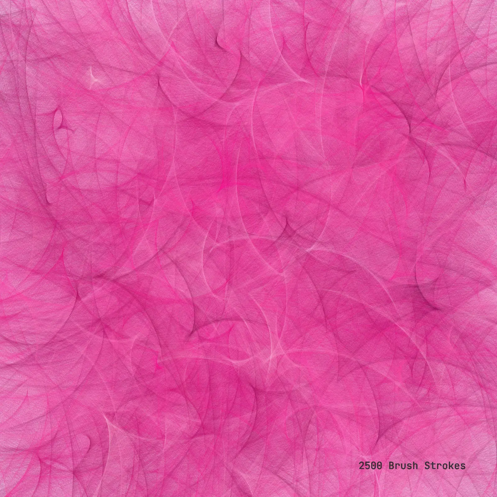

class: top, left # h1 ## h2: ### h3: normal text. <hr /> #big damn quote that has to be long, so that it can wrap around the screen. <figcaption>some kind of caption, credited to someone; 2025.</figcaption> <hr /> - everyone loves bullet points. - i don't quite know why. --- class: middle, left # this is a big quote to share, by someone and something; <br>i .grey.unbold[made] it long so that it long so that .grey[only some words] wrap around; you know? <figcaption>some kind of caption, credited to someone; 2025.</figcaption> --- class: middle, left # media -> --- class: top, left .left[### single image:] .center[] --- class: top, left .left[### split images:] <figure> <div class = "two"> </div> <figcaption>whatever bro; 2025.</figcaption> </figure> --- class: top, left background-image: url("../assets/media/2601_template/1.webp") # full image: --- # single video: <figure> <video preload="yes" muted playsinline autoplay nocontrols loop height = "500"> <source src="../assets/media/2601_template/light+Sand.mp4" type="video/mp4" /> your browser does not support videos. </video> <figcaption>shit i made; 2025.</figcaption> </figure> --- # many videos: <figure> <div class = "two"> <video preload="yes" muted playsinline autoplay nocontrols loop height = "400"> <source src="../assets/media/2601_template/light+Sand.mp4" type="video/mp4" /> your browser does not support videos. </video> <video preload="yes" muted playsinline autoplay nocontrols loop height = "400"> <source src="../assets/media/2601_template/light+Sand.mp4" type="video/mp4" /> your browser does not support videos. </video> </div> <figcaption>shit i made; 2025.</figcaption> </figure> --- # one video with audio: <figure> <video preload="yes" loop controls height = "500"> <source src="../assets/media/2601_template/16_e2052.mp4" type="video/mp4" /> your browser does not support videos. </video> <figcaption>shit i made; 2025.</figcaption> </figure> --- class: middle left # special stuff -> --- class: top, left .left[# code:] ``` javascript var first = 2; let second = 1; function add (num_1, num_2){ return Math.sum(num_1, num_2); } console.log(add(first, second)); ``` --- # typograms: <script type="text/typogram"> +------------------+ | something here | +------------------+ | | | | | +------------------+ +------------------+ | something else |---------|something else bro| +------------------+ +------------------+ just text -------- more text | | | | | more text------> going to more text </script> --- # or like a typogram diagram: <script type="text/typogram"> "+10-15V" ___0,047R *---------o-----o-|___|-o--o---------o----o-------. "+"| | | | | | | | -===- _|_ | | .+. | | | -===- .-. | | | | 2k2 | | | -===- 470|"+" | | | | | | _|_ "-"| uF| '--. | '+' .+. | \ / LED +---------o |6 |7 |8 1k | | | -+- ___|___ .-+----+--+--. | | | | -═══- | | '+' | | - | |1 | |/ BC | GND | +------o--+ 547 | | | | |`> | | | .+. | | .-------+ | 220R| | o----||-+ IRF9Z34 | | | | | | |+-> | | MC34063 | `+' | ||-+ | | | | | | BYV29 -12V6 | | | '----' o--|<-o----o--X OUT 6000 micro "-"|"+" | |2 | | | Farad, 40V ___|_____ | |--o C| | | Capacitor ~ ~ ~ ~ ~ | | GND 30uH C| | --- 470 | | |3 1nF C| | ### uF | | |-------||--. | | | + | '-----+----+-' | GND | GND | 5| 4| | | | | '-------------o-------------o | | ___ | `-------------*------/\/\/------------o--|___|-' 2k | 1k0 .+. | | 5k6 + 3k3 | | in Serie '+' | GND </script> --- # lists: - item 1 - item 2 - whatever --- class: middle left ### [prototype](https://arjunmakesthings.github.io/projects/2023-24_digital-painters/page.html) --- class: middle center .bottom[#iframes:] <iframe width = "889" height="500" src="https://www.youtube.com/embed/4fMQ44g6BfM?si=OFf0KUsX7oH0o_C9" frameborder="0" allow="encrypted-media" allowfullscreen></iframe>